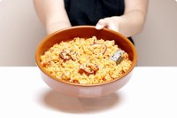
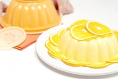
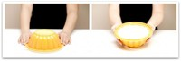
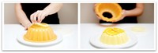
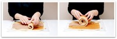
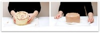
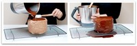
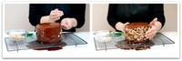
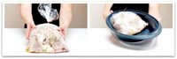

Sirve tartas de papel o paper cake stand
Wed, 15 Feb 2012 05:45:48 +0000
Aprovechando el rosa cursi de la receta anterior, hoy lo continúo con este rosaaaa -cursi también- de este curioso sirve tartas de papel que me encontré hace unas semanas paseando por Bayonne. Era una visita fugaz. Un paseo para dar el salto a Francia -que no tengo el gusto de conocer- y volver al País [...]

Aprovechando el rosa cursi de la receta anterior, hoy lo continúo con este rosaaaa -cursi también- de este curioso sirve tartas de papel que me encontré hace unas semanas paseando por Bayonne. Era una visita fugaz. Un paseo para dar el salto a Francia -que no tengo el gusto de conocer- y volver al País Vasco para cenar. Unas horitas escuchando otro idioma y ver otro tipo de vida, de construcciones, de escaparates.

La tienda era muy sencilla, hacía esquina y tenia grandes ventanales a la calle. Mezclaba cosas raras de cocina con ropa para vestir, mantas, zapatillas, sillas… una rastrillo de cosas mezcladas, bonitas y curiosas.

Cómo estaba Willy con nosotros, Javi se quedó fuera, así que entré a echar un vistazo por si algo me llamaba la atención y encontré este sirve tartas pero en muchos colores, parecía un sirvetartas arlequín. Menos mal que tenían dos acabados. Este me pareció más “ponible” ;D

Y aquí os lo traigo. Un sirvetartas de papel que no tengo ni idea de donde lo venden online, pero que me pareció curioso para una fiesta de cumple infantil. Seguramente solo servirá para un uso, porque ya sabéis que si hay niños de por medio las cosas se manchan mucho más, pero tampoco pasa nada. Las cosas son para disfrutarlas.
Mi sirvetartas de papel me costó entre 5-6 euros y esta vez he traído uno de más pensando en vosotros. ¿Quien lo quiere???
Cóctel Bellini para San Valentín
Sat, 11 Feb 2012 16:29:50 +0000
Si sois como yo, os va a dar igual en que caíga el día de los enamorados. Jamás sigo las fiestas al pie de la letra, en realidad me suele tocar trabajarlas todas, así que al final, para no frustrarme, yo pongo el día. He de confesar que este día en concreto no lo celebro [...]

Si sois como yo, os va a dar igual en que caíga el día de los enamorados. Jamás sigo las fiestas al pie de la letra, en realidad me suele tocar trabajarlas todas, así que al final, para no frustrarme, yo pongo el día. He de confesar que este día en concreto no lo celebro nunca, cualquier día me parece genial para pasarla con mi chico, no marco un día concreto en mi calendario, cualquier día me parece el ideal, creo que por eso -y muchas otras cosas- llevamos tantos años juntos -nos adaptamos a todo, y ya van 19)… pero como sé que a muchos si que os hace ilusión, os traigo un cóctel rapido, rico y muy barato.
Por cierto, los melocotones en almíbar son sencillisimos de hacer, os dejo la receta por si os animáis cuando estén en temporada.
Me lo estoy tomando ahora mismo. Está delicioso ;D
Cóctel Bellini para San Valentín
Ingredientes para una pareja de 2, jejejeje:
2 mitades de melocotón en almíbar
1 cucharada de zumo de limón
10gr de azúcar o su equivalente en sacarina
6 cubitos de hielo
1-2 botellas pequeñas (benjamín) de champán o cava
Preparación:
Si lo vas a hacer para servir en el momento:
1.-Pon en el vaso el melocotón, el zumo de limón, el azúcar, los hielos y 50gr de champán y mezcla 30 segundos en velocidad 7.
2.- Sirve en copas, llenando estas unos 2/3 con champan y el resto con la mezcla preparada.
Si no vas a prepararlo en el momento y lo vas a guardar en la nevera:
1.- Pon en el vaso el melocotón, el zumo de limón, el azúcar y 50gr de champán sin hielos. Mezcla 30 segundos en velocidad 7, pasa a una jarra y guarda en la nevera hasta el momento de servir. No le pongas los hielos para que no se quede demasiado líquido. Si quieres pueden mezclarlos ahora con el preparado guardado o no ponerlos.
2.- Llena 2/3 de tu copa con el champán y remata con la mezcla guardada de melocotón. Ñammmm
Nota: Recuerda que debe estar todo bien frío para que esté delicioso. Necesitarás algo más de 1 benjamín, lo digo para que no te quedes corto… Feliz San Valentín
Fuente: Vorwerk
Arroz con pulpo con Thermomix
Mon, 06 Feb 2012 11:02:51 +0000
Delicioso… no puedo decir otra cosa. Bueno, también es muy fácil y con Thermomix más si cabe. Esta receta de arroz con pulpo es de unos de los libros nuevos de vorwerk, el de “101 arroces del mundo” y la verdad es que la receta merece mucho la pena. Para hacerlo, he usado pulpo cocido [...]

Delicioso… no puedo decir otra cosa. Bueno, también es muy fácil y con Thermomix más si cabe. Esta receta de arroz con pulpo es de unos de los libros nuevos de vorwerk, el de “101 arroces del mundo” y la verdad es que la receta merece mucho la pena. Para hacerlo, he usado pulpo cocido congelado -nunca había comprado pulpo congelado, siempre lo compro fresco en la pescadería y sin duda queda muy bien con este arroz- se rehoga unos minutos y no veáis que olorcillo a pulpo en la cocina, le potencia su sabor.
He usado menos cantidad de la que indica la receta y me ha gustado la proporción pulpo-arroz, así que para que no os salga más caro os pongo cuanto he usado yo.
Que lo disfrutéis
Arroz con pulpo
Ingredientes para 4 personas:
100g de cebolla
1 diente de ajo
150gr de pimiento rojo
100gr de aceite de oliva virgen extra
400gr yo y 600gr en la receta original de pulpo congelado (descongelado y cortado en rodajas)
100gr de tomate natural triturado
sal
una cucharadita de pimentón
una hoja de laurel
500gr de agua
200gr de arroz redondo
Preparación:
1.- Trocea la cebolla, el ajo y el pimiento rojo cortados en trozos, 4 segundos, velocidad 4. Retire del vaso y reserva.
2.- Sin lavar el vaso ,pon el aceite y caliéntalo 5 minutos, Varoma, velocidad 1.
3.- Agrega el pulpo y rehoga 7 minutos, Varoma, giro a la izquierda y velocidad cuchara.
4.- Incorpora las verduras reservadas y programa 5 minutos, Varoma, giro a la izquierda y velocidad cuchara.
5.- Echa el tomate, la sal, el pimentón y el laurel . Programa 5 minutos, Varoma, giro a la izquierda y velocidad cuchara.
6.- Vierte el agua y programa 4 minutos, Varoma, giro a la izquierda y velocidad cuchara para calentarla.
7.- Ya solo queda verter el arroz por el bocal y programar 13 minutos, 100º, giro a la izquierda y velocidad cuchara.
Deja reposar 5 minutos antes de servir.
DELICIOSOOOOO
Fuente: Vorwerk “101 arroces del mundo” y “Mis Thermofavoritos“
Bavaroise de naranja con “Federica”
Fri, 03 Feb 2012 01:36:58 +0000
Este verano descubrí a “Federica”, un licor que se había creado a semejanza del conocido Limoncello, pero que salía de nuestras naranjas, las de Valencia. Fue todo un descubrimiento. Ya os conté hace tiempo que tuve la suerte de estar en la Cátedra Ferrán Adriá, en ella siempre se presentan productos y este era uno de [...]

Este verano descubrí a “Federica”, un licor que se había creado a semejanza del conocido Limoncello, pero que salía de nuestras naranjas, las de Valencia. Fue todo un descubrimiento.
Ya os conté hace tiempo que tuve la suerte de estar en la Cátedra Ferrán Adriá, en ella siempre se presentan productos y este era uno de ellos. “Federica” tiene un etiquetado precioso creado por Eva Armisen, una botella transparente con un licor naranja intenso y nada más y nada menos que 30º grados de alcohol. Una bomba.
El caso es que me gustó tanto, que les pedí a sus creadores unas botellas para regalarlas aquí y como nos las han enviado y a mi me gusta compartir, sortearemos 3 botellas para que podáis disfrutar el día de los enamorados -que está a la vuelta de la esquina- entre todos los comentarios que dejéis en este post. El lunes, pondré quienes son los ganadores. :)
Mucha suerte y ¡Viva el producto nacional!.
Bavaroise de naranja con “Federica”
Ingredientes:
20gr de hojas de gelatina hidratadas en agua fria
160gr de azúcar glass o sacarina
250gr de nata con un 35% de materia grasa
3-4 naranjas peladas y sin nada de parte blanca para unos 400gr de líquido
1/2 limón pelado sin nada de parte blanca
10gr de Federica “Narancello”
4 yemas ó 2 huevos
un pellizco de sal para potenciar el sabor dulce
Preparación:
1.- Pon a hidratar en un vaso con agua fría las hojas de gelatina.
2.- Vierte el azúcar en el vaso de la thermomix y pulveriza 30 segundos en velocidad progresiva. Reserva.
3.- Pon la mariposa en las cuchillas y vierte la nata y 20gr de azúcar glas. Programa velocidad 3 y medio, sin tiempo, hasta que la nata esté montada. Reserva en la nevera en un bol. Retira la mariposa.

4.- Pon las naranjas y el limón en el vaso y tritura 1 minuto en velocidad progresiva 5-10, dejando los 30 primeros segundos en velocidad 5. Del total del líquido reserva 400gr para la receta, el resto dáselo al peque de la casa para merendar :) o tómalo tu… ya verás que rico.
5.- Pon en el vaso, los 400gr de zumo de naranja con el limón, las 4 yemas ó 2 huevos, los 10 gramos de “Federica” y un pellizco de sal y programa 6 minutos, 100º, velocidad 4. Agrega por el bocal la gelatina hidratada y escurrida unos segundos antes de que termine el tiempo y deja templar la mezcla.

6.- Espera a que la mezcla esté más fría y mezcla con la nata reservada en la nevera. Unta el molde que vayas a usar con un poco de mantequilla o aceite girasol, vierte la mezcla y mete en la nevera para que cuaje al menos unas 4 horas. Desmolda y sirve frio.
Nota: Puedes sustituir la “Federica” por cointreau. Para adornar usa naranjas de las nuestras, cortadas en rebanadas muy finas, ya verás que bonito queda y que rico. Recuerda que es un postre frio.
Tarta rayada paso a paso con Thermomix
Thu, 26 Jan 2012 23:00:52 +0000
¡¡Hoy estamos de celebración!!. Cada vez que en el grupo de Facebook “Cocinar con Thermomix” sumamos 1000 amigos más, proponemos una receta para hacer entre todos y llenar el muro con nuestras fotos. La otra página que tenemos en “VelocidadCuchara” y ahí somos unos cuantos menos porque lleva menos tiempo abierta, pero es donde ponemos [...]
¡¡Hoy estamos de celebración!!. Cada vez que en el grupo de Facebook “Cocinar con Thermomix” sumamos 1000 amigos más, proponemos una receta para hacer entre todos y llenar el muro con nuestras fotos. La otra página que tenemos en “VelocidadCuchara” y ahí somos unos cuantos menos porque lleva menos tiempo abierta, pero es donde ponemos todas las novedades de VC y de La Comunidad, así que el que quiera hacer doblete, está invitado :)
Esta vez llegamos a los 13.000 amigos, casi nada… la tarta tenía que ser diferente pero como sé que hay gente nueva que aún no se atreve mucho, he optado por una receta llamativa pero no imposible de hacer y con chocolate. Y hablando de este ingrediente, no os olvidéis que hace poco lanzamos nuestro recetario “Todo con chocolate” que podéis descargar de forma gratuita…
Espero que el paso a paso os ayude a entenderla bien. Los ingredientes son sencillos, así que:
¡Va por ustedes! jijiji
Tarta rayada
Ingredientes para 12 raciones:
Bases:
8 huevos
100gr de azúcar
2 cucharaditas de miel
2 cucharaditas de extracto de vainilla
100gr de harina de repostería
Crema de relleno:
350gr de mantequilla en trozos a temperatura ambiente
120gr de leche
120gr de azúcar glass
40gr de cacao puro en polvo
Cobertura:
200gr de nata
200gr de chocolate fondant troceado
100gr de nueces enteras (adornar) y el resto troceadas.
Preparación:
Pica las nueces durante 2 segundos en velocidad 4.Reserva
Trocea el chocolate durante 30 segundos en velocidad 5. Reserva
Bases
1.- Precalienta el horno a 200ºC. Vamos a hacer las dos planchas que usaremos para la tarta por separado.
2.- Pon la mariposa y agrega 4 huevos, 50gr de azúcar, una cucharadita de miel y una de extracto de vainilla y mezcla 4 minutos a 37º y velocidad 3 y medio.
3.- Acabado el tiempo, programa misma tiempo y velocidad.
4.- Añade 50gr de harina y mezcla 10 segundos en velocidad 3. Retira la mariposa, termina de envolver con la espátula y vierte sobre un molde rectangular forrado con papel de hornear de 20X30X1cm o en tu bandeja de horno. Hornéa a 200ºC durante 7 minutos aproximadamente.
5. Repite la operación, y haz tu segunda plancha de bizcocho.
Ojo: si pones las dos planchas en contacto, una encima de la otra, puede resultarte un poco más difícil despegarlas.
Crema de relleno
6.- Lava el vaso y coloca la mariposa limpia. Pon todos los ingredientes del relleno y programa 3 minutos en velocidad 3.
7.- Mientras, retira el papel de las planchas de bizcocho horneadas, y ve cortándolas en tiras (en 3 tiras iguales) y echa por encima la crema de relleno como si untaras nocilla.
8.- Comienza a enrollar las tiras, primero una y ve incorporando las siguientes, haciendo un rulo cada vez más grande. Tendrás que hacerlo con las dos planchas. El resultado será un rollo relleno grandote, como el de la foto.

9.- Coloca el bizcocho de pie, sobre una bandeja, alisa bien la superficie y los laterales con la espátula e introduce a la nevera unas 2 horas antes de continuar.

No olvides probar tu tarta. El relleno está buenísimo. No me dejéis verlo más tiempo o me lo comeré yo sola!!!
Cobertura: Prepara la cobertura pasadas las 2 horas de reposo dentro de la nevera.
10.- Pon la nata en el vaso limpio y programa 3 minutos, 100º, velocidad 2.
11.- Agrega el chocolate y mezcla 30 segundos en velocidad 3. Quedará una crema homogénea. Deja templar.

Montaje:
12.- Retira el bizcocho de la nevera. Con la ayuda de una pala de repostería o una espumadera plana, pasa el bizcocho a una rejilla -al echar el chocolate escurrirá mejor-, con papel de cocina debajo para recoger el chocolate que caiga. Vierte la cobertura bien por toda la “Tarta rayada”.

13.- Tapiza los laterales del bizcocho con las nueces troceadas y decora con las nueces enteras. Reserva en la nevera hasta la hora de servir.
Nota: Si crees que te va a resultar muy pesado hacerlo todo el mismo día, puedes hacer las bases el día anterior y dejarlas en la nevera tapadas con film transparente para que no se resequen.
Los rellenos pueden variar a vuestro gusto: nutella, dulce de leche, crema pastelera, etc…
Para aprovechar el chocolate que se ha escurrido en la rejilla, sólo tendrás que recogerlo con una espátula y mezclarlo con las nueces, para hacer unos ricos bombones. Haz pelotitas con una cuchara, ponlos sobre papel de horno y a la nevera.
Fuente: Vorwerk
Bizcocho “rollo amore” 14 de Febrero
Mon, 13 Feb 2012 13:54:08 +0000
Venga, vale… he sucumbido a los encantos de San Valentín. No he podido resistirme y con un poco de colorante, huevos y nata, he preparado un bizcocho “rollo amore” y tal, al más puro estilo brazo de gitano, pero con más glamour. En la foto no se aprecia, pero el rosa en directo es mucho [...]

Venga, vale… he sucumbido a los encantos de San Valentín. No he podido resistirme y con un poco de colorante, huevos y nata, he preparado un bizcocho “rollo amore” y tal, al más puro estilo brazo de gitano, pero con más glamour. En la foto no se aprecia, pero el rosa en directo es mucho más intenso y a pesar de no haber emborrachado el bizcocho, me parece que queda delicioso, con esas fresas con nata que a mi tanto me gusta.
Creo que al final, -como no tengo guardia- me voy a animar con una cenita sorpresa :D
Bizcocho “rollo amore”
Ingredientes:
Para el bizcocho
4 huevos
120gr de azúcar glass
Vainilla líquida o azúcar vainillado
Colorante rojo o rosa
120gr de harina
Una pizca de sal
15gr de levadura química
Para el relleno:
400gr de nata para montar
80gr azúcar glass
1 cucharada de queso de untar (opcional)
Fresas al gusto para rellenar y decorar (opcional)
Preparación:
Precalienta el horno a 180ºC, calor arriba y abajo.
1.- Pon en el vaso la mariposa y vierte los huevos y el azúcar glass. Programa 5 minutos, 37º, velocidad 3 y medio y cuando se acabe el tiempo, vuelve a programar 5 minutos, sin temperatura, velocidad 3 y medio.
2.- Agrega unas gotas de vainilla líquida o si no tiene un par de cucharadas de azúcar vainillado, añade 1/2 cucharadita del colorante y mezcla 10 segundos en velocidad 3.
3.- Incorpora la levadura, la harina y la pizca de sal y mezcla 15 segundos en velocidad 1.
4.- Forra con papel encerado o de horno, la bandeja de horno. Yo lo mojo, hago unos cortes en los extremos del papel y lo encajo bien en la bandeja. Vierte la mezcla y mueve la bandeja oscilándola a un lado y otro para que se extienda por igual por todas partes. Hornéa 10 minutos a 180ºC.
5.- Monta la nata bien fría en el vaso. Pon la mariposa y vierte la nata, el azúcar y la cucharada de queso. Programa velocidad 3 y medio hasta que esté lista. Reserva en la nevera.
6.- Una vez horneada la plancha de bizcocho, desmolda sobre papel albal o papel de horno espolvoreado con azúcar glas (para que no se pegue), enróllalo y déjalo enfriar…
7.- Abre el rollo, unta con la nata reservada y vierte trocitos de fresas. Enrosca como un brazo de gitano. Listo. Adorna con fresas en forma de corazón :D
Chinois de crema
Wed, 08 Feb 2012 21:34:49 +0000
Lo tenía en pendientes. Se lo había prometido a María y por fin en un hueco lo he hecho. Seguro que pensáis ¿esta chica debe estar gordísima??? y no es mentira, mi sobrepeso me delata, pero hay que ser lista. Esta vez el Chinois se lo han comido mis alumnos temporales a los que doy [...]

Lo tenía en pendientes. Se lo había prometido a María y por fin en un hueco lo he hecho. Seguro que pensáis ¿esta chica debe estar gordísima??? y no es mentira, mi sobrepeso me delata, pero hay que ser lista. Esta vez el Chinois se lo han comido mis alumnos temporales a los que doy la vara un día si y otro también. Ya me han preguntado como se prepara, les ha gustado y espero que a vosotros también. Por cierto, que María hizo esta receta para La Comunidad y podéis ver el paso a paso que yo no he hecho esta vez. No os lo perdáis para ver más clara la receta.
Esta es mi propuesta dulce para el día de los enamorados, aunque ya estoy pensando en otras opciones. Atentos chicos, que os va a caer otro bollo, jejejeje
Besotes
Chinois de crema
Ingredientes:
Para la crema pastelera:
3 huevos
500gr de leche
100gr de azúcar
50gr de maizena
1 cuharadita de azúcar vainillado
Para la masa:
50gr de leche
50gr de mantequilla o margarina
50gr de azúcar
1-2 cucharaditas de azúcar vainallada o esencia de vainilla
1 huevo
1 yogurt natural o de limón
25gr de levadura fresca (1 cubito)
1 cucharada de miel
400gr de harina de fuerza
1 huevo batido para pintar
Mermelada de albaricoque y agua (para dar brillo)
Preparación:
1.- Crema pastelera: Pon todos los ingredientes en el vaso y programa 7 minutos, 90º, velocidad 4. Una vez lista, pon la crema en un bol y tápalo con film transparente, dejando que el film toque la crema pastelera para que no se forme costra. Deja templar pero que no se enfríe del todo para que luego se pueda untar bien.
2.- La masa: Echa en el vaso la leche, la mantequilla o margarina, el azúcar y las cucharaditas de esencia de vainilla y mezcla 2 minutos, 37º, velocidad 2.
3.- En un vaso aparte, mezcla la cucharada de miel con la levadura hasta que se disuelva y añádelo al vaso junto con el huevo y el yogurt. Mezcla todo 5 segundos en velocidad 4.
4.- Agrega la harina y mezcla 10 segundos velocidad 6 y amasa 3 minutos, vaso cerrado y velocidad espiga. La masa no debe pegarse, si lo necesitas pon un poco más de harina. Deja levar entre 1 hora y hora y media, hasta que la masa aparezca por el bocal de la Thermomix.
5.- Vuelca la masa sobre una superficie enharinada y amasa con las manos para quitarle la aire. A continuación, extiéndela con un rodillo hasta formar un rectángulo de 40×30 cm. aproximadamente.
6.- Extiende la crema pastelera sobre la masa y enróllala como si fuera un brazo de gitano.
7.- Corta porciones de unos 3 dedos de grosor y colóca los cortes -en un molde redondo desmoldable preferiblemente untado con mantequilla-, con la crema hacia arriba.
8.- Tápalo con un trapo y deja de nuevo que leve hasta que ocupe la superficie total del molde -1 hora-.
9.- Acabado el levado, pinta la superficie con huevo batido e introduce en el horno precalentado a 200ºC durante, unos 30-40 minutos. Importante que vigiles porque se dora pronto, por lo que deberás tapar con papel de aluminio la superficie.
10.- Por último tienes dos opciones una vez horneado el bollo, una es espolvorearlo con azúcar glass y servir, la otra es darle brillo. Para darle brillo mezcla 2 cucharadas de mermelada de albaricoque o melocotón con 2 cucharadas de agua y pinta la superficie. Riquísimo, ya verás.
Fuente: María López Velasco
Y la Federica “el arancello de Valencia” es para:
Sun, 05 Feb 2012 23:00:38 +0000
Ya tenemos ganadores de “Federica”. Antes de dar el nombre de los premiados, debo decir que esta es una bebida alcohólica que debe tomarse con moderación. Es un licor con 30ºgrados, que se puede consumir y usar en la cocina o como aperitivo. La puedes tomar antes de comer o después, como mojito de naranja, [...]
Ya tenemos ganadores de “Federica”. Antes de dar el nombre de los premiados, debo decir que esta es una bebida alcohólica que debe tomarse con moderación. Es un licor con 30ºgrados, que se puede consumir y usar en la cocina o como aperitivo. La puedes tomar antes de comer o después, como mojito de naranja, en nuestra bavaroise, tras una cena, en una sangría, al pie de la piscina (aunque con estas temperaturas no lo aconsejo), en una noche de luna llena o el día de los enamorados…
Cuidado con Federica que contagia optimismo naranja, así que ojo que crea adicción :D
Estoy realmente sorprendida con el número de comentarios que han llegado al blog. Nunca pensé que este post fuera a tener tanta repercusión. Lástima que solo tengo tres botellas de Federica, lo siento. Aquí los ganadores. El regalo es para los siguiente comentarios:
Cris (3 de Febrero a las 12:24 pm)
José Manuel Álvarez (4 de Febrero a las 10:15 am)
Lola Vicente (4 de Febrero 2012 a las 05:40 pm)
Los premiados deberéis remitir vuestros datos y dirección a rosa@velocidadcuchara.com para haceros llegar el Arancello. Besos y felicidades a todos.
Picantones al vino, paso a paso con Thermomix
Mon, 30 Jan 2012 23:00:34 +0000
¿Que es un picantón?: Es un pollo pequeño que es genial para presentar en raciones individuales. La carnes es tierna y sin grasa (ojo con la piel) y suelen pesar menos de 500gr. Es muy fácil encontrarlos y seguro que en la carnicería del barrio lo puedes encargar de un día para otro si no [...]

¿Que es un picantón?: Es un pollo pequeño que es genial para presentar en raciones individuales. La carnes es tierna y sin grasa (ojo con la piel) y suelen pesar menos de 500gr. Es muy fácil encontrarlos y seguro que en la carnicería del barrio lo puedes encargar de un día para otro si no lo tienen. Al menos en mi barrio es así :)
Los picantones de la izquierda de la foto son los que he hecho en el varoma, como se puede apreciar, están menos tostados y la carne es más jugosa. Los de la derecha están asados al horno durante 1 hora y 15 minutos y están más tostados pero la carne es más seca.
En ambos casos, para cocinarlos he usado la misma bolsa de asar que aparecía en el Pollo asado en bolsa, y en los muslos de pollo con patatas cajún e incluso en el pan milagro.
Hoy os dejos las dos versiones y además os cuento que me ha parecido cada una.
Besosssss
Picantones al vino
Ingredientes:
4 picantones
2 pastillas de caldo de ave o sal
1 limón cortado en cuartos
1 pizca de perejil
1 pizca de ajo deshidratado
1 pizca de pimienta negra
16 cebollitas francesas (opcional)
250gr de vino blanco
2 cucharadas de aceite de oliva virgen extra
2 litros de agua
2 bolsas para asar de plastico
Preparación:
1.- Lava los picantones y sécalos bien con papel de cocina. Salpimenta por dentro y por fuera con la pastilla del caldo o la sal y con pimienta negra molida, introduce el cuarto de limón dentro del pollo. Ponle perejil por fuera y un poco de ajo. Reserva
2.- Pela las cebollitas francesas a mano y reserva (opcional).
3.- Pon dentro de cada bolsa de asar 2 picantones, 8 cebollitas, 1 cucharada de aceite, 60 de vino blanco y cierra. Coloca las bolsas dentro del recipiente varoma.
4.- Vierte en el vaso los 2 litros de agua para hacer los picantones al vapor, cierra el vaso, programa 60 minutos, varoma, velocidad 2, y coloca el varoma en su posición.
5.- Cuando se termine el tiempo, da la vuelta a las bolsas, programa 30 minutos más, en temperatura Varoma y velocidad 2. Ve precalentando el horno para usar el grill y darles 10 minutos de calor para tostarlos un poco por ambas caras.

6.- Retira los picantones de las bolsas, pasa a una fuente con todo el líquido que han saltado. Vierte lo que te ha sobrado del vino en la fuente y hornea 10 minutos por cada lado. Listo
Picantones al vino blanco (versión corta)
He probado a hacer los picantones directamente al horno sin pasar por la cocción en varoma de la Thermomix. Tan solo tienes que meter en la bolsa, precalentar el horno a 190ºC y hornear durante 1 hora, dar la vuelta a la bolsa y hornear 15 minutos más.
De sabor han quedado algo diferentes:
- Los picantones al horno están mas secos con la carne más dura pero deliciosa y tienen menos sabor a limón.
- Los picantones en varoma tienen la carne más suelta, hidratada y jugosa, saben más a limón y tras la cocción necesitan un golpe de grill por ambas caras para que la piel quede tostada y tenga ese aspecto de horno que invita a comer.
Resultado: dependerá del tiempo de que dispongas, pero la diferencia de sabor aunque existe no hace que una sea mejor que otra. Son diferentes y en ambos casos están deliciosos. Una es más “a la parrilla” que otra, así que a tu gusto.
Nota: dentro de tus bolsas de asar pueden meter zanahorias, patatas y otra verduras para que los picantones no estén solos -lo sé, tenía que haberlos puesto pero me daba pereza ir a la compra esta mañana. La verdad es que pueden hacerse de mil formas diferentes y lo bueno es que por su tamaño, los puedes presentar en raciones individuales.
Calamares en salsa americana
Tue, 24 Jan 2012 23:00:34 +0000
¿Mitad de semana de nuevo y con pocas ideas para cocinar? No lo pienses más y vete a la pescadería de tu barrio, además de hacer compra en un sitio pequeño -el de toda la vida- tendrás seguro un producto delicioso y de calidad. Pide 1 kilo de calamares, que te los limpien y te los [...]
¿Mitad de semana de nuevo y con pocas ideas para cocinar? No lo pienses más y vete a la pescadería de tu barrio, además de hacer compra en un sitio pequeño -el de toda la vida- tendrás seguro un producto delicioso y de calidad. Pide 1 kilo de calamares, que te los limpien y te los corten en aros y no te olvides de comprar Brandy. El resto de ingredientes seguro que los tiene ya en casa.
Yo he lavado bien los calamares -venían negros de la tinta- y aprovechando todos los trucos que estos días hemos aprendido sobre los usos que le damos a nuestro “Centrifugador de lechuga” , al acabar, los he centrifugado bien para que soltaran el exceso de agua. Con esto he conseguido que la salsa quede más concentrada en el mismo tiempo de cocinado.
Esta receta con Thermomix, no estaba todavía incluida en nuestro índice, como tampoco lo estaban las “Galletas de avena con chocolate“ que nos ha preparado Elena para La Comunidad, no te la pierdas porque es genial.
¡A cocinar!
Calamares en salsa americana con Thermomix
Ingredientes:
250gr de cebolla
1 ajo
50gr de aceite de oliva virgen extra
200gr de tomate natural triturado
Sal al gusto
1 cucharada de azúcar
750gr de calamares
Pimienta al gusto
200gr de Brandy
Preparación:
1.- Introduce en el vaso la cebolla cortada en cuartos junto con el ajo y el aceite y programa 7 segundos en velocidad 4. Sofrie 8 minutos, Varoma, giro a la izquierda y velocidad cuchara.
2.- Añade el tomate el azúcar y la sal y programa 10 minutos, Varoma, giro a la izquierda y velocidad cuchara.
3.- Agrega los calamares la pimienta y la sal y cocina durante 4 minutos, en temperatura Varoma, giro a la izquierda y velocidad cuchara.
4.- Por último incorpora el Brandy y ya solo quedará esperar 25 minutos, Varoma, giro a la izquierda y velocidad cuchara. Listo
Nota: le vendrá fenomenal que lo acompañes de un cuscús como he hecho yo esta vez, o de arroz blanco de guarnición que es facilísimo de hacer en Thermomix y además queda muy suelto al cocinarlo en el cestillo.
Fuente: Vorwerk